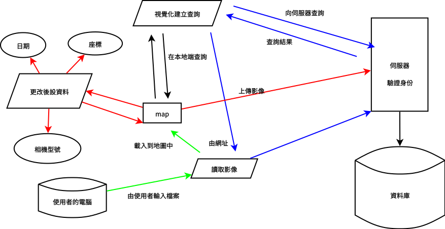

spexif 網路相簿
可以讀取相片的 metadata ， 判斷拍攝地點，並在地圖上展示。 並允許使用者改變相片的拍攝地點， 與上傳、下載相片。
專題結果為一個網站，不註冊也能使用， 但要註冊才能上傳相片。 離線時仍能夠讀取、修改相片拍攝地點。
開發
網頁前端使用 HTML CSS JavaScript 撰寫， 後端使用 PHP 與 MySQL 做為資料庫。 前後端低耦合，透過統一的 API 溝通。
前端
前端使用到二函式庫： 分別是讀取相片地點資料的 piexif ， 與 leaflet 地圖。
另外不直接使用 javascript ， 而使用方言 coffeescript ， 再編譯為 javascript ，簡化程式內容。
piexif
piexif 是少數允許修改 exif 的 JS 函式庫， 由於我希望在瀏覽器端也能修改 exif ， 所以雖然介面比較糟糕，但還是採用 piexif 。
原本好像是 python 函式庫， 後來有人用 JavaScript 重寫的。
leaflet
相比 google map ， leaflet 顯得輕巧快速。 且介面設計良好，比 google map 簡單易用。
介接的主要是來自 open street map 的圖資， 但也能用另外的圖資。
coffee script
javascript 的一種方言， 比起 javascript 更加 函數式 ， 允許箭頭函數的宣告， 大幅減少定義函數的程式碼量。
後端
後端感謝 105 級廖志傑學長協助， 與林昭宏老師實驗室所提供的伺服器， 使用 PHP 與 MySQL 寫成供地理查詢、 接受上傳檔案、管理使用者註冊的系統。
另外在解析 exif 座標是使用 jhead ， 為 C 語言寫成。
系統架構
系統架構中分四大流程，分別是
- 由使用者輸入影像，
- 更改已讀取的影像的後設資料，
- 向伺服器查詢影像，
- 查詢本地的影像。

主要概念是瀏覽器端有一份地圖， 地圖可以從本機或用網址讀取影像， 並加入到地圖中。 （但受限於 ajax 的跨網域存取限制， 地圖只能載入同一網域， 也就是同在伺服器上的影像。）
使用者當然可以從電腦自己載入影像， 但她不知伺服器上的圖片的網址，所以有查詢功能； 查詢結果就是符合條件的圖片網址。 而程式會協助查詢， 再將自動將查詢結果加入地圖中。
而在地圖中的影像會被顯示在拍攝時的位置， 也會顯示一些其它資訊，可以很直觀的直接編輯， 或把照片拖拉到想要的地方。 存檔後影像的資訊就會被更新。
如果是註冊的用戶，就可以上傳影像。 之前的查詢、從伺服器載入影像， 都是建立在你有註冊、伺服器上有你的影像的前提下。 雖然沒註冊也能從本地載入影像，依拍攝地點展示， 甚至也能依查詢本地的影像、編修， 只是少了雲端相簿的功能而已。
各元件功能介紹
讀取影像
透過 load photo 表單可以讀取影像。 只要點擊選取檔案，選取欲載入的影像， 即可載入到地圖上。
注意不須點選旁邊的 upload ， 該按鈕的功能為上傳，非載入。
核心地圖
也就是流程圖中的核心部份。 所有已載入的影像會依拍攝地點顯示在地圖上， 使用者可以直接更改相片的經緯度、 拍攝日期等後設資料， 或使用拖拉的方法直接改變相片的經緯度。
為了批次處理，我引入了選取的概念， 可以選取多張影像後進行批次編輯。 其中選取可以手動選取，亦可以由查詢功能選取。
選取功能
目前除了手動取選影像外， 也有反選與清除所有選取二功能。 分別位在頂端功能表上的 invert select 與 clear select 。
訊息中心
在畫面中除了三個表單外， 有一個 info 小窗口會顯示系統訊息。 像是如果輸入了格式不對的檔案， 會在窗口顯示格式錯誤。
編輯狀態
由於將更改實際寫入影像消耗較大，採不自動寫入策略。 更改座標或其它資訊後，影像會移到對應位置， 文字框中的資訊也會更新，但影像並不會跟著更新。
需要寫入時，先選取所有欲寫入影像， 之後點選功能表上的 save change ， 等到 info 視窗中出現 update image exif. 即完成寫入。 完成寫入後，即可直接右鍵點選該影像下載， 即是更新 exif 後的影像。
本地端查詢
查詢分為向伺服器查詢與在已載入的影像中查詢。 方法都分三種：日期查詢、距離查詢、方格查詢。
進行本地端查詢時，勾選表單中 search in local 即可， 而伺服器查詢則是勾選 search from server 。
在本地端查詢後，符合條件的影像會被選取； 而向伺服器查詢，則會載入符合條件的影像，但不會選取。
為了方便使用者查詢，有建立 HTML 表單， 可以視覺化進行參數設定，不需要手動輸入數字。
向伺服器查詢
三種查詢，日期查詢、距離查詢、方格查詢， 都是使用 HTTP 定義的 GET 方法， 利用 query string 指定查詢參數。
query string 為一種利用網址傳送資料的方法， 其資料型態為純文字，使用鍵、值對的方式傳送， 附加在網址的後面。
例如 http://140.116.80.138/~2017GO/exifmap/gisquery.php?foo=bar&a=b ，
其中 foo 為鍵、 bar 為值，
a 為鍵， b 為值，各鍵值對間以 & 隔開。
本查詢系統以 Type 定義查詢方法，
Type=Date 、 Type=Dist 、 Type=LLRange
分別對應日期查詢、距離查詢、方格查詢。
伺服器查詢結果
查詢結果為一包含符合條件的圖片的網址的網頁， 預設是查詢後程式會自行分析結果， 並一一載入影像。
<!DOCTYPE html>
<html>
<head> <meta charset="UTF-8"> </head>
<body>
<img src="image-1.jpg">
<img src="image-2.jpg">
<img src="image-3.jpg">
</body>
</html>
日期查詢
| 參數名 | Type | DateFrom | DateTo |
|---|---|---|---|
| 值 | Date | 開始時間 | 結束時間 |
gisquery.php?Type=Date&DateFrom=1999-12-31&DateTo=2048-01-01
時間的格式為 YYYY-MM-DD ，
在比較先進的瀏覽器有日曆輔助輸入，
在較舊的瀏覽器則需自己行輸入。
開始時間或結束時間若其一留空， 則只以另一個作為條件查詢。
距離查詢
| 參數名 | Type | Dist | Lon | Lat |
|---|---|---|---|---|
| 值 | Distance | 距離 | 經度 | 緯度 |
gisquery.php?Type=Distance&Dist=20&Lon=121.121&Lat=23.5
其實也就是圓查詢，查詢在某一圓形內的影像。
距離單位為公里，經緯度只取到度， 其餘以小數表示，不以度分秒表示。 以西以南為負，正號可省，
若少任一參數則報錯。
在選取時，點擊表單上 draw circle 按鈕後可以在地圖上畫圓。 單擊決定圓心，再單擊後確定半徑； 圓十秒後會自行消失。
方格查詢
| 參數名 | Type | LonFrom | LonTo | LatFrom | LatTo |
|---|---|---|---|---|---|
| 值 | LLRange | 開始經度 | 結束經度 | 開始緯度 結束緯度 |
gisquery.php?Type=LLRange&LonFrom=121.5&LonTo=122.5&LatFrom=23&LatTo=24
在前端面介尚未實作，但可以手動輸入查詢。
向伺服器讀取影像
透過 HTTP GET 方法經由網址讀取影像。 目前不須身份驗證，因要先查詢才知道影像網址， 而查詢時已有認證過，故此步驟不驗證尚可。
上傳
| 參數名 | m_imagefiles[] |
|---|---|
| 值 | 影像檔 |
上傳使用 html 表單夾帶檔案的 POST 方法上傳。 可以一次上傳多個檔案。 上傳時會保留檔名，並直接以檔名儲存在個人的資料夾。
要上傳時，先選取所有欲上傳影像， 再點選 load photo 表單中的 upload 按鈕， 等到 info 視窗中出現 successful upload selected image. 即代表上傳成功。
在伺服器端
在上傳時，首先會先以 cookie 檢查使用者登入， 若未登入則不予上傳。
解析相片的 exif ，利用 PHP 的
exec函數呼叫jhead，得到 wgs84 座標。儲存檔案到對應的路徑，若存在則覆寫舊的版本。 並在資料庫中更新或新建立一筆資料，寫入座標。
認檔名
本系統是認檔名不認影像， 即可只要檔名相同，新的會覆蓋掉舊的影像。 更改影像即是依此原理，檔名相同， 上傳後舊的就被蓋掉了。
但目前右鍵下載時，下載的檔名不會是原始檔名， 要注意，如果又上傳會造成同樣相片有兩張的情況。
糟遇的問題
EXIF 格式
PHP 內建的 exif 讀取函數 exif_read_data()
沒辦法讀取 piexif 修改過的 exif 。
用 piexif 修改過後，檔案大小會改變，
就算什麼都沒動也一樣。
我試了幾款讀取 exif 的程式， 都可以讀 piexif 修改的結果。 可能是 php 的版本容錯比較差， piexif 所生成的 exif 又不標準， 才會不能讀取。
雖然然有找到其它 PHP 的函式庫，
但對 PHP 的安裝不熟，不會安裝。
最後決定用外部程式解決。
用一個獨立的可執行檔，從 php 裡面用
exec() 執行她，讀取輸出結果。
一開始想用 perl ，因為怕有跨平台問題， 用直譯式語言比較安全。 結果那台伺服器上竟然沒有 perl ！ 扯爆了， perl 在 linux 裡根本是標準配備， 竟然會沒有。
後來找到另一個叫 jhead 的程式， 用 C 寫的，編譯很順利， 執行檔直接複製到 server 上就可以跑了。 完工。
影像被暫存
因為我的策略是交換影像不交換後設資料， 而修改完影像的後設資料後，就會上傳新的影像。 但又向伺服器查詢一次，再讀取一次影像時， 卻發現座標仍是舊的。
發現是要求瀏覽器讀取某個網址時， 如果用的是 HTTP GET 方法， 瀏覽器會先檢查之前有沒有讀取過該檔案， （檢查網址一不一樣。）該檔案過期了沒， （看當初 GET 該檔案時有沒有指定能快取多久。） 過期了才真正重新再和伺服器要。
所以我讀取影像時，瀏覽器暫存了該影像， 之後我又要求時，沒有真得去和伺服器要， 而是直接用之前讀的結果， 所以讀出來還是舊的資料。
可以在使用 GET 方法時， 強制要求讀取新的，不使用暫存的。 但這樣有點太積極，可能會吃很多流量， 所以我改成 GET 前，先檢查之前有沒有上傳過， 沒有就可以用暫存，不然就要新的。
leaflet 的緯經度
一般我們習慣用 經度,緯度 的格式，
但 leaflet 竟然是用 緯度,經度 ，
有點不適應，有時候找 bug 找半天，
才發現是經緯度打相反。
在寫程式時注意，除了引用 leaflet 的該模組，
其它都統一使用 經度,緯度 的格式；
該模組對外的介面也要統一使用 經度,緯度 ，
在內部交換資料時才使用 緯度,經度 的格式。
UI 設計
一開始介面還沒美化，給組員廖志傑用，他不太會用。 我還覺得奇怪，介面不就這樣， 又不難，怎麼可能不會用。
後來才發現是因為介面我自己設計的， 我當然會用；但其它人就不一定。 所以設計介面這種事情， 應該要找一些完全不知道這系統在幹麻的人， 看他試用一次，才知道哪裡要改進。
抽換函式庫
一開始想先寫個原型來轉玩， 那時只會 google map API ，就先擋著用。 後來想換為 OSM ，找到 OSM 可以用 leaflet map ， 就打換把底層抽換成 google map API 。
當初設計時就有考慮到，要把各函式庫分開， 不要過度依賴某個函式庫。 也就是在對函式庫都再包一層， 不要直接呼叫函式庫中的函數， 而是呼叫包裝函數，包裝函數再呼叫函式庫。
這樣在其它程式內都不會直接和 google map 互動， 而是呼叫那層包裝函數。 換成 leaflet 時，就是用 leaflet 重新實現包裝函數而已， 不用一個個檢查哪些地方呼叫了 google map ， 要一一改成 leaflet 。
只有一個無法很乾淨的剝離，就是瀏覽器的 dom 。 因為太多地方要用到了， 不然本來希望我的程式也能在 node.js 中跑的。
TODO
方格查詢
覺得其實不是很重要，有圓形查詢就夠了， 而且時間不夠，有空再做。
心得
覺得越到後面越好寫。一開始先把各物件關係確立， 定義好哪些方法屬於哪些物件，再一一把方法寫完整。 到後期就是包裝、呼叫早期寫好的物件和方法而已。
自己覺得寫得最好的是在地圖那部份， 尤其是把 google 地圖換成 leaflet ， 看起來是很大的工程，但其實根本沒花什麼力。 可能和各地圖的函數庫介面寫得不錯有關。
而 piexif 根本是坨屎坑，那 API 爛得跟什麼一樣， 一堆原始的操作都要手動，介面又醜， 內容還很原始，比起現在的趨勢有點過時。 當初怎麼包裝的我都不忍看了，一坨坨擠在一起的代碼。


 ### 日期查詢
參數名 | Type | DateFrom | DateTo
-------|-------|------------|-------
值 | Date | *開始時間* | *結束時間*
gisquery.php?Type=Date&DateFrom=1999-12-31&DateTo=2048-01-01
時間的格式為 `YYYY-MM-DD` ，
在比較先進的瀏覽器有日曆輔助輸入，
在較舊的瀏覽器則需自己行輸入。
開始時間或結束時間若其一留空，
則只以另一個作為條件查詢。
### 距離查詢
參數名 | Type | Dist | Lon | Lat
-------|-----------|-------------|--------|----
值 | Distance | *距離* | *經度* | *緯度*
gisquery.php?Type=Distance&Dist=20&Lon=121.121&Lat=23.5
其實也就是圓查詢，查詢在某一圓形內的影像。
距離單位為公里，經緯度只取到度，
其餘以小數表示，不以度分秒表示。
以西以南為負，正號可省，
若少任一參數則報錯。
在選取時，點擊表單上 *draw circle*
按鈕後可以在地圖上畫圓。
單擊決定圓心，再單擊後確定半徑；
圓十秒後會自行消失。
### 方格查詢
參數名 | Type | LonFrom | LonTo | LatFrom | LatTo
-------|-----------|-------------|--------|---------|------
值 | LLRange | *開始經度* | *結束經度* | *開始緯度* *結束緯度*
gisquery.php?Type=LLRange&LonFrom=121.5&LonTo=122.5&LatFrom=23&LatTo=24
在前端面介尚未實作，但可以手動輸入查詢。
### 向伺服器讀取影像
透過 HTTP GET 方法經由網址讀取影像。
目前不須身份驗證，因要先查詢才知道影像網址，
而查詢時已有認證過，故此步驟不驗證尚可。
### 上傳
參數名 | m_imagefiles[]
-------|---------------
值 | *影像檔*
上傳使用 html 表單夾帶檔案的 POST 方法上傳。
可以一次上傳多個檔案。
上傳時會保留檔名，並直接以檔名儲存在個人的資料夾。
要上傳時，先選取所有欲上傳影像，
再點選 *load photo* 表單中的 *upload* 按鈕，
等到 *info* 視窗中出現
*successful upload selected image.*
即代表上傳成功。
#### 在伺服器端
1. 在上傳時，首先會先以 cookie 檢查使用者登入，
若未登入則不予上傳。
2. 解析相片的 exif ，利用 PHP 的 `exec`
函數呼叫 `jhead` ，得到 wgs84 座標。
3. 儲存檔案到對應的路徑，若存在則覆寫舊的版本。
並在資料庫中更新或新建立一筆資料，寫入座標。
### 認檔名
本系統是認檔名不認影像，
即可只要檔名相同，新的會覆蓋掉舊的影像。
更改影像即是依此原理，檔名相同，
上傳後舊的就被蓋掉了。
但目前右鍵下載時，下載的檔名不會是原始檔名，
要注意，如果又上傳會造成同樣相片有兩張的情況。
## 糟遇的問題
### EXIF 格式
PHP 內建的 exif 讀取函數 `exif_read_data()`
沒辦法讀取 piexif 修改過的 exif 。
用 piexif 修改過後，檔案大小會改變，
就算什麼都沒動也一樣。
我試了幾款讀取 exif 的程式，
都可以讀 piexif 修改的結果。
可能是 php 的版本容錯比較差，
piexif 所生成的 exif 又不標準，
才會不能讀取。
雖然然有找到其它 PHP 的函式庫，
但對 PHP 的安裝不熟，不會安裝。
最後決定用外部程式解決。
用一個獨立的可執行檔，從 php 裡面用
`exec()` 執行她，讀取輸出結果。
一開始想用 perl ，因為怕有跨平台問題，
用直譯式語言比較安全。
結果那台伺服器上竟然沒有 perl ！
扯爆了， perl 在 linux 裡根本是標準配備，
竟然會沒有。
後來找到另一個叫 jhead 的程式，
用 C 寫的，編譯很順利，
執行檔直接複製到 server 上就可以跑了。
完工。
### 影像被暫存
因為我的策略是交換影像不交換後設資料，
而修改完影像的後設資料後，就會上傳新的影像。
但又向伺服器查詢一次，再讀取一次影像時，
卻發現座標仍是舊的。
發現是要求瀏覽器讀取某個網址時，
如果用的是 HTTP GET 方法，
瀏覽器會先檢查之前有沒有讀取過該檔案，
（檢查網址一不一樣。）該檔案過期了沒，
（看當初 GET 該檔案時有沒有指定能快取多久。）
過期了才真正重新再和伺服器要。
所以我讀取影像時，瀏覽器暫存了該影像，
之後我又要求時，沒有真得去和伺服器要，
而是直接用之前讀的結果，
所以讀出來還是舊的資料。
可以在使用 GET 方法時，
強制要求讀取新的，不使用暫存的。
但這樣有點太積極，可能會吃很多流量，
所以我改成 GET 前，先檢查之前有沒有上傳過，
沒有就可以用暫存，不然就要新的。
### leaflet 的緯經度
一般我們習慣用 `經度,緯度` 的格式，
但 leaflet 竟然是用 `緯度,經度` ，
有點不適應，有時候找 bug 找半天，
才發現是經緯度打相反。
在寫程式時注意，除了引用 leaflet 的該模組，
其它都統一使用 `經度,緯度` 的格式；
該模組對外的介面也要統一使用 `經度,緯度` ，
在內部交換資料時才使用 `緯度,經度` 的格式。
### UI 設計
一開始介面還沒美化，給組員廖志傑用，他不太會用。
我還覺得奇怪，介面不就這樣，
又不難，怎麼可能不會用。
後來才發現是因為介面我自己設計的，
我當然會用；但其它人就不一定。
所以設計介面這種事情，
應該要找一些完全不知道這系統在幹麻的人，
看他試用一次，才知道哪裡要改進。
### 抽換函式庫
一開始想先寫個原型來轉玩，
那時只會 google map API ，就先擋著用。
後來想換為 OSM ，找到 OSM 可以用 leaflet map ，
就打換把底層抽換成 google map API 。
當初設計時就有考慮到，要把各函式庫分開，
不要過度依賴某個函式庫。
也就是在對函式庫都再包一層，
不要直接呼叫函式庫中的函數，
而是呼叫包裝函數，包裝函數再呼叫函式庫。
這樣在其它程式內都不會直接和 google map 互動，
而是呼叫那層包裝函數。
換成 leaflet 時，就是用 leaflet
重新實現包裝函數而已，
不用一個個檢查哪些地方呼叫了 google map ，
要一一改成 leaflet 。
只有一個無法很乾淨的剝離，就是瀏覽器的 dom 。
因為太多地方要用到了，
不然本來希望我的程式也能在 node.js 中跑的。
## TODO
一些待完成的功能，
可能會做可能不會做。
### 方格查詢
覺得其實不是很重要，有圓形查詢就夠了，
而且時間不夠，有空再做。
### 批次編輯功能
現在雖然能一次選取一堆照片，
但選起來也不能幹麻。
也許可以加個批次編輯，
像一次把移動所有選起來的圖片座標，
或把日期都調到某一天。
### and or 查詢
目前查詢是把符合的選起來，不符合的也不會清除，
所以其實可以看作 or 查詢。
但就沒有 and 查詢，或比較複雜的判斷式也不能做到。
### 性能
目前地圖只能載入十張照片左右，太多瀏覽器會跑動。
我在寫程式時沒有注意性能這塊，倒致開銷有點大。
### 照片太大
如果把照片都直接丟在地圖上，
大概丟個五六張畫面就很亂了。
現在是讓照片半透明，滑鼠懸浮才顯示，
但其實還是很亂。
### 適應性設計
也就是對觸控裝置做優化。
目前在觸控螢幕上可以操作，但有諸多不便。
像是我們有到一些懸浮、拖拉的操作，
但在觸控裝置上比較難實現；
所以操作起來比較彆腳一點。
## 心得
覺得越到後面越好寫。一開始先把各物件關係確立，
定義好哪些方法屬於哪些物件，再一一把方法寫完整。
到後期就是包裝、呼叫早期寫好的物件和方法而已。
自己覺得寫得最好的是在地圖那部份，
尤其是把 google 地圖換成 leaflet ，
看起來是很大的工程，但其實根本沒花什麼力。
可能和各地圖的函數庫介面寫得不錯有關。
而 piexif 根本是坨屎坑，那 API 爛得跟什麼一樣，
一堆原始的操作都要手動，介面又醜，
內容還很原始，比起現在的趨勢有點過時。
當初怎麼包裝的我都不忍看了，一坨坨擠在一起的代碼。
### 日期查詢
參數名 | Type | DateFrom | DateTo
-------|-------|------------|-------
值 | Date | *開始時間* | *結束時間*
gisquery.php?Type=Date&DateFrom=1999-12-31&DateTo=2048-01-01
時間的格式為 `YYYY-MM-DD` ，
在比較先進的瀏覽器有日曆輔助輸入，
在較舊的瀏覽器則需自己行輸入。
開始時間或結束時間若其一留空，
則只以另一個作為條件查詢。
### 距離查詢
參數名 | Type | Dist | Lon | Lat
-------|-----------|-------------|--------|----
值 | Distance | *距離* | *經度* | *緯度*
gisquery.php?Type=Distance&Dist=20&Lon=121.121&Lat=23.5
其實也就是圓查詢，查詢在某一圓形內的影像。
距離單位為公里，經緯度只取到度，
其餘以小數表示，不以度分秒表示。
以西以南為負，正號可省，
若少任一參數則報錯。
在選取時，點擊表單上 *draw circle*
按鈕後可以在地圖上畫圓。
單擊決定圓心，再單擊後確定半徑；
圓十秒後會自行消失。
### 方格查詢
參數名 | Type | LonFrom | LonTo | LatFrom | LatTo
-------|-----------|-------------|--------|---------|------
值 | LLRange | *開始經度* | *結束經度* | *開始緯度* *結束緯度*
gisquery.php?Type=LLRange&LonFrom=121.5&LonTo=122.5&LatFrom=23&LatTo=24
在前端面介尚未實作，但可以手動輸入查詢。
### 向伺服器讀取影像
透過 HTTP GET 方法經由網址讀取影像。
目前不須身份驗證，因要先查詢才知道影像網址，
而查詢時已有認證過，故此步驟不驗證尚可。
### 上傳
參數名 | m_imagefiles[]
-------|---------------
值 | *影像檔*
上傳使用 html 表單夾帶檔案的 POST 方法上傳。
可以一次上傳多個檔案。
上傳時會保留檔名，並直接以檔名儲存在個人的資料夾。
要上傳時，先選取所有欲上傳影像，
再點選 *load photo* 表單中的 *upload* 按鈕，
等到 *info* 視窗中出現
*successful upload selected image.*
即代表上傳成功。
#### 在伺服器端
1. 在上傳時，首先會先以 cookie 檢查使用者登入，
若未登入則不予上傳。
2. 解析相片的 exif ，利用 PHP 的 `exec`
函數呼叫 `jhead` ，得到 wgs84 座標。
3. 儲存檔案到對應的路徑，若存在則覆寫舊的版本。
並在資料庫中更新或新建立一筆資料，寫入座標。
### 認檔名
本系統是認檔名不認影像，
即可只要檔名相同，新的會覆蓋掉舊的影像。
更改影像即是依此原理，檔名相同，
上傳後舊的就被蓋掉了。
但目前右鍵下載時，下載的檔名不會是原始檔名，
要注意，如果又上傳會造成同樣相片有兩張的情況。
## 糟遇的問題
### EXIF 格式
PHP 內建的 exif 讀取函數 `exif_read_data()`
沒辦法讀取 piexif 修改過的 exif 。
用 piexif 修改過後，檔案大小會改變，
就算什麼都沒動也一樣。
我試了幾款讀取 exif 的程式，
都可以讀 piexif 修改的結果。
可能是 php 的版本容錯比較差，
piexif 所生成的 exif 又不標準，
才會不能讀取。
雖然然有找到其它 PHP 的函式庫，
但對 PHP 的安裝不熟，不會安裝。
最後決定用外部程式解決。
用一個獨立的可執行檔，從 php 裡面用
`exec()` 執行她，讀取輸出結果。
一開始想用 perl ，因為怕有跨平台問題，
用直譯式語言比較安全。
結果那台伺服器上竟然沒有 perl ！
扯爆了， perl 在 linux 裡根本是標準配備，
竟然會沒有。
後來找到另一個叫 jhead 的程式，
用 C 寫的，編譯很順利，
執行檔直接複製到 server 上就可以跑了。
完工。
### 影像被暫存
因為我的策略是交換影像不交換後設資料，
而修改完影像的後設資料後，就會上傳新的影像。
但又向伺服器查詢一次，再讀取一次影像時，
卻發現座標仍是舊的。
發現是要求瀏覽器讀取某個網址時，
如果用的是 HTTP GET 方法，
瀏覽器會先檢查之前有沒有讀取過該檔案，
（檢查網址一不一樣。）該檔案過期了沒，
（看當初 GET 該檔案時有沒有指定能快取多久。）
過期了才真正重新再和伺服器要。
所以我讀取影像時，瀏覽器暫存了該影像，
之後我又要求時，沒有真得去和伺服器要，
而是直接用之前讀的結果，
所以讀出來還是舊的資料。
可以在使用 GET 方法時，
強制要求讀取新的，不使用暫存的。
但這樣有點太積極，可能會吃很多流量，
所以我改成 GET 前，先檢查之前有沒有上傳過，
沒有就可以用暫存，不然就要新的。
### leaflet 的緯經度
一般我們習慣用 `經度,緯度` 的格式，
但 leaflet 竟然是用 `緯度,經度` ，
有點不適應，有時候找 bug 找半天，
才發現是經緯度打相反。
在寫程式時注意，除了引用 leaflet 的該模組，
其它都統一使用 `經度,緯度` 的格式；
該模組對外的介面也要統一使用 `經度,緯度` ，
在內部交換資料時才使用 `緯度,經度` 的格式。
### UI 設計
一開始介面還沒美化，給組員廖志傑用，他不太會用。
我還覺得奇怪，介面不就這樣，
又不難，怎麼可能不會用。
後來才發現是因為介面我自己設計的，
我當然會用；但其它人就不一定。
所以設計介面這種事情，
應該要找一些完全不知道這系統在幹麻的人，
看他試用一次，才知道哪裡要改進。
### 抽換函式庫
一開始想先寫個原型來轉玩，
那時只會 google map API ，就先擋著用。
後來想換為 OSM ，找到 OSM 可以用 leaflet map ，
就打換把底層抽換成 google map API 。
當初設計時就有考慮到，要把各函式庫分開，
不要過度依賴某個函式庫。
也就是在對函式庫都再包一層，
不要直接呼叫函式庫中的函數，
而是呼叫包裝函數，包裝函數再呼叫函式庫。
這樣在其它程式內都不會直接和 google map 互動，
而是呼叫那層包裝函數。
換成 leaflet 時，就是用 leaflet
重新實現包裝函數而已，
不用一個個檢查哪些地方呼叫了 google map ，
要一一改成 leaflet 。
只有一個無法很乾淨的剝離，就是瀏覽器的 dom 。
因為太多地方要用到了，
不然本來希望我的程式也能在 node.js 中跑的。
## TODO
一些待完成的功能，
可能會做可能不會做。
### 方格查詢
覺得其實不是很重要，有圓形查詢就夠了，
而且時間不夠，有空再做。
### 批次編輯功能
現在雖然能一次選取一堆照片，
但選起來也不能幹麻。
也許可以加個批次編輯，
像一次把移動所有選起來的圖片座標，
或把日期都調到某一天。
### and or 查詢
目前查詢是把符合的選起來，不符合的也不會清除，
所以其實可以看作 or 查詢。
但就沒有 and 查詢，或比較複雜的判斷式也不能做到。
### 性能
目前地圖只能載入十張照片左右，太多瀏覽器會跑動。
我在寫程式時沒有注意性能這塊，倒致開銷有點大。
### 照片太大
如果把照片都直接丟在地圖上，
大概丟個五六張畫面就很亂了。
現在是讓照片半透明，滑鼠懸浮才顯示，
但其實還是很亂。
### 適應性設計
也就是對觸控裝置做優化。
目前在觸控螢幕上可以操作，但有諸多不便。
像是我們有到一些懸浮、拖拉的操作，
但在觸控裝置上比較難實現；
所以操作起來比較彆腳一點。
## 心得
覺得越到後面越好寫。一開始先把各物件關係確立，
定義好哪些方法屬於哪些物件，再一一把方法寫完整。
到後期就是包裝、呼叫早期寫好的物件和方法而已。
自己覺得寫得最好的是在地圖那部份，
尤其是把 google 地圖換成 leaflet ，
看起來是很大的工程，但其實根本沒花什麼力。
可能和各地圖的函數庫介面寫得不錯有關。
而 piexif 根本是坨屎坑，那 API 爛得跟什麼一樣，
一堆原始的操作都要手動，介面又醜，
內容還很原始，比起現在的趨勢有點過時。
當初怎麼包裝的我都不忍看了，一坨坨擠在一起的代碼。